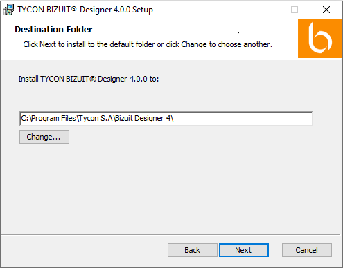
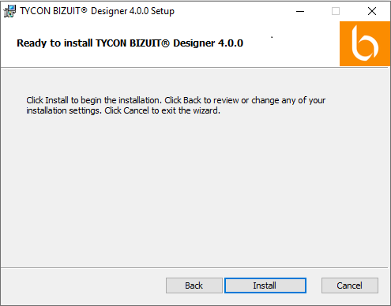
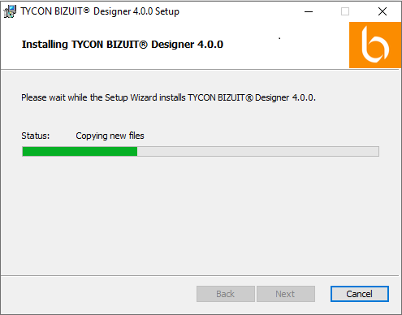

Seleccione Directorio de Instalación y presione el botón Next:

En la pantalla de confirmación de instalación presione el botón Install:

BIZUIT Designer comenzará a instalarse:

Anterior / Siguiente